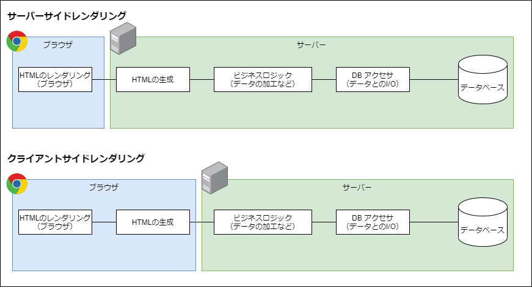
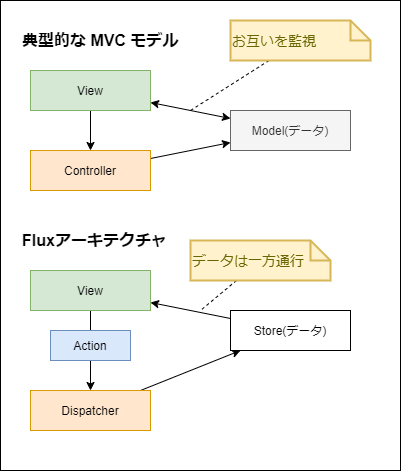

Webアプリケーションのアーキテクチャ
筆者: 海老原 賢次（ebi311@gmail.com）
作成日: 2021-08-18
更新履歴:
- 2023-09-26: SSR,CSRのハイブリッドについて追記した
- 2023-09-26: Go, Rust の説明を追加した
- 2021-08-18: 新規作成
ここでは、Webアプリケーションを設計する上で必要な知識について学びます。
また、よく使用される言語やフレームワーク、ライブラリについてもお話します。
ここで書かれている評価や見解は、あくまでも個人的な経験や調査した結果を考察した上での意見であり、参考程度としてください。
Webアプリケーションが動作するときに、どこで何がどのように処理しているのか、考えたことが有るでしょうか？
まず、Webアプリケーションの歴史について少しお話します。
Webアプリケーションのアーキテクチャの変遷
Webブラウザはもともと静的なHTMLファイルを表示するもので、HTMLは、文書に意味をもたせる (例えば文書のタイトルはコレだとか、これは重要な部分であるとか) ために、それをルール化したマークアップ言語というもので、それ自体にインタラクティブなアプリケーションの機能はありませんでした。
その後、CGIという仕組みにより、HTMLをサーバー側で動的に書き換えてクライアントに送ることができるようになり、 HTMLもテキストボックスやボタンなどのフォームの機能を持つようになったことで、インタラクティブな処理、つまり UI を持てるようになりました。
CGIはWebサーバーのおまけ程度のもので、非常にシンプルな機能で言語も簡易なもので、たくさんのリクエストや重い処理を行うには荷が重く、 複雑な処理を書くとメンテナンス性の非常に悪いものでした。
Webアプリに多くの機能を求められるようになると、CGIでは対処できなくなりました。
そうなると、Webアプリケーションに特化したサーバー製品が登場します。Java Servlet や .NET の ASP などです。
これらも、内部の動作は CGI と大きく違うものの、サーバー側で動的なHTMLを作成する、という手段はCGIと変わりませんでした。
Google が Google maps などで、クライアントスクリプトでバックグランドで通信した情報を取得し、 それをもとにブラウザ上で動的にHTMLを書き換える仕組みを採用し、話題となりました。
クライアント上で動的にHTMLを書き換える仕組みはそれ以前から有りましたが、せいぜい見た目を動的に変えるだけでした。 Googleは、バックグランドの通信とそれにとも無く動的なレンダリングを組み合わせたことで、Webアプリケーションの利便性は格段に向上しました。 この仕組を Ajax といいます。
Note
最近は、それが当たり前になっているので、Ajax という言葉も使われなくなっています。それだけ普遍的になった、ということでしょう。
現在では更にそれを推し進めて、サーバー側には静的なベースとなるHTMLのみを置き、レンダリングは全てクライアントで行う、クライアントレンダリングの仕組みを採用することが多くなっています。
これに対して、従来のサーバー側で動的なHTMLを構築することを、サーバーサイドレンダリングと呼びます。
サーバー側の処理に注目してみましょう。
サーバーの処理として、サーバーサイドレンダリングではHTML生成が必要ですし、クライアントレンダリングの場合はクライアントのバックグランドの呼び出しに応答する API が必要になります。
これらの実装には、言語とフレームワークが選択でき、それらによって大きく異なります。後にいくつか紹介します。
ブラウザ側の処理に注目してみましょう。
ブラウザで採用できる言語は JavaScript （ほぼ）1択です。
Info
正確には WebAssembly という仕組みで C/C++, Rust などの言語書いたコンパイルされたプログラムを動作させることもできるので、 1択とは言い切れないです。しかし、直接のレンダリングができなかったり、コンパイルが必要、ロードが遅い、 デバッグなどの問題などがあり、 Webアプリケーションとしては一般的ではありません。
しかし、処理速度がJavaScriptより高速なため複雑な処理を行うことができます。例えば、音声や動画のエンコードなどの計算処理を
WebAssembly で行い、JavaScript で結果を受け取って表示する、といった使い方が一般的です。
WebAssembly を活用すると、より複雑なWebアプリケーションを実現できるので、選択肢の1つとして覚えておいてください。
ブラウザ側で動的にHTMLを生成したり変更したりすることを DOM操作 といいますが、クライアントレンダリングの需要が増えるのに伴い、この DOM操作のコーディングにも問題が出てきました。
まず、JavaScriptは軽量な言語で、コンパイルや変数の型指定などが必要なく、小さいプログラムを書くには非常に効率の良いものです。 Webアプリの黎明期にはそれで良かったのですが、その需要の高まりに伴い、クライアントでも大規模な開発が多くなりました。そうなると、JavaScriptの利点が欠点となってきました。
また、DOM操作も複雑になりました。原因としてHTMLとJavaScript、CSS が分離しており、大規模になるとそれらの管理が難しくなるためです。
そのため、DOM操作を行う ユーティリティやフレームワークが次々と派生することになりました。
中・大規模なソフトウェアとしてのJavaScript言語仕様の欠点を克服するために、Alt JavaScript というコンパイルしてJavaScriptに変換する言語も登場しました。
ここでは、サーバーサイドレンダリング(SSR)とクライアントレンダリング(CSR)といった、全体的なアーキテクチャと、サーバー側のフレームワーク、ブラウザ側のフレームワークについて話をします。
サーバーサイドレンダリング(SSR)とクライアントレンダリング(CSR)
Webアプリケーションが動作するときには、どんな処理がどこで動いているのでしょう。
システムの目的や仕組みによって様々ではありますが、一般的な流れとしては、下記のようになっていると思います。
- データベースとの I/O
- ビジネスロジックの処理
- HTMLの生成
- HTMLの表示
このうち、HTMLの表示はブラウザが行います。
サーバーサイドレンダリングでは、HTML生成までを役割として担います。
クライアントレンダリングでは、HTMLの生成をブラウザの処理で行います。

サーバーの負荷の違い
サーバーの処理の負荷を考えると、一見してわかるように、クライアントレンダリングのほうが軽いです。ブラウザがサーバーの負荷を肩代わりするようなものですね。
HTMLの生成処理は、複雑な画面になるほどメモリやCPUを消費します。1つのリクエストではたいしたことはなくても、1分間に数百、数千のリクエストが来る場合、レスポンスを確保するためサーバーのスペックを上げる必要があります。つまり、クライアントレンダリングに比べて運用面でコスト高となります。
サービス指向アーキテクチャ
クライアントレンダリングを採用した場合、サーバー側はHTMLを返すのではなく、 必要に応じたデータのI/Oを受け持つ API を実装し、クライアントからその API をコールすることになります。
これは、サーバーのAPIをブラウザのUIに限らずアクセスできるものなので、他のUI（例えばモバイルアプリ）や外部のシステムからも利用できるようにもなります。
別な言い方をすると、UI と サービス（機能）を分離することになり、サービス指向アーキテクチャとして設計しやすく、システムの汎用性が高まります。
ただし、サービス指向に基づいた API の設計が必要となります。
サーバーサイドレンダリングで同様のことをしようとすると、HTMLを返すインターフェースとは別に作成する必要があり、メンテナンス性でも劣ります。
ちなみに、API設計 というのは、開発者の1つのスキルとなっており、例えば企業の求人での望まれるスキルの1つになっていたりもします。
SEO
SEO とは、Search Engine Optimization の略で、検索サイトでのヒットのしやすいように HTML などを工夫することを言います。
Google や Yahoo! などの検索エンジンの仕組みは明らかにされていませんが、自動でクローニングすることから、ブラウザでレンダリングするものに関しては、検索エンジンが見てくれない可能性が高いです。
サーバーサイドレンダリングでは、クライアント側ではそれが静的なHTMLか、サーバーで動的に作成されたかは関係ないので、検索エンジンがレンダリングした内容を読み込んでくれるでしょう。
商用サイトなどで、検索エンジンにヒットしないのは致命的な損失で、そのような場合は部分的にサーバーサイドレンダリングを行うこともあります。
利用者のファーストインプレッション
利用者が、サイトにアクセスして画面が表示されるまで時間がかかるとユーザーが離れていってしまいます。
社内アプリではあまり問題になりませんが、商用サイトではとても重要です。
これに関しては、サーバーサイドレンダリング、クライアントレンダリングのどちらが良いかというのは難しいです。
複雑な処理をクライアント側で行うと、クライアントのマシンスペックに依存しますし、 サーバー側で行うと、利用者が多くなると、途端にパフォーマンスが低下します。
複雑な画面の場合、基本的にはサーバー側で静的なHTMLか、必要に応じて部分的な比較的軽い動的なHTML生成処理として、 基本的にはクライアントレンダリングで行うのが良いでしょう。
その場合でも、はじめの画面が真っ白ではなく、ユーザーに少しずつでも情報を表示できるような仕組みによって、待ち時間を感じさせないような工夫があると良いでしょう。
このように、ハイブリッドな構成が昨今では一般的になっており、そのようなフレームワークも登場しています。
ハイブリッド型のフレームワーク
SSR、CSR それぞれメリット・デメリットがあります。それぞれのメリットを生かしたハイブリッド型の構成にするのが良いのですが、なかなか難しい設計が求められます。
しかし最近では、Next.js を始めとした、ハイブリッド型のフレームワークが登場しており、それを利用するのも良いでしょう。
静的サイト生成(SSG)
静的なサイトを作成するにも、フレームワークを使用することも多くなりました。
静的なコンテンツを定期的に更新するような、CMSなどのサイトに向いています。
データベースのデータからページを生成するようにしておいて、バッチで定期的(データの更新されたタイミングなどでも良い) にHTMLを生成し、Webサーバーに配置するようにします。
そうすることで、静的なWebサーバーを用意すれば良く、単純が故に多くのリクエストに対応することができますし、 コンテンツの生成するための短時間の処理で済むので、クラウドで AWS の Lambda などを利用することで、コストが低く押さえられます。
The Best React-Based Framework | Gatsby
Next.js も制定機サイトジェネレータとして利用することもできます。
サーバーの言語とフレームワーク
サーバーでは、様々な言語と言語ごとのフレームワークが選択できます。
フレームワークを使わなくても、サーバー処理は実装できますが、非常に効率が悪いので、フレームワークを使うことは必然でしょう。
サーバーレンダリングに特化したものや、WebAPI に特化したもの、その両方に対応したもの、など、それぞれに特徴やトレンドがあるので、選択する際には仕様をよく確認しましょう。
言語としては、Java、Python、Ruby、PHP、JavaScript（Node.js）、.NET (C#, VB.NET) などがメジャーです。
Java
Java は、過去のものも含めると最も実績のあるものでしょう。開発者も他と比べても最も多いでしょう。
Webフレームワークとしてはサーブレットという仕組みの上にフレームワークを導入するのが一般的です。このフレームワークにもいくつもの種類があり、Spring やStruts といったものがメジャーなものだと思います。
Python
Python は最近最も人気のある言語です。が、すみません、筆者にあまり知識ないです。Webのフレームワークとしては、Django, Flask というものがあるようです。
GO
Goは、Googleが開発した比較的新しいプログラミング言語です。シンプルな言語設計、並行処理に強い、高い処理速度などの特徴があります。
Webサーバー開発でも利用されることが多く、人気や需要が爆伸びしているプログラミング言語のひとつです。
RUST
Rustは、性能、メモリ安全性、安全な並行性を目指して設計されたマルチパラダイムのプログラミング言語です。RustはC++などのプログラミング言語の代替品として、信頼性、パフォーマンス、生産性（並列処理）に優れた言語として開発されました。
C,C++ と同じように機械語にコンパイルされるので、動作が非常に早く複雑や大量のデータの処理に向いています。大規模なWebアプリケーションのバックエンドとしても利用されます。
Ruby
Ruby は一時開発者の間で人気のあった言語で、今でも多くのサーバーで動作しています。手軽に始められるので、スタートアップ企業で採用されることが多いです。
Webのフレームワークとしては、Ruby on Rails や Sinatra がよく採用されるようです。
PHP
PHP は、CGI に変わる言語として、古くから利用されてきました。歴史はありますが、現役で動作しているものも多いと思います。
現在でもバージョンアップを続けており、最近のバージョンでは Null Safety の機能もありますし、開発者が多いので、人材を集めやすいのも特徴と言えるでしょう。
PHPのフレームワークとしては、Laravel, CakePHP などを利用することが多いようです。
Node.js
Node.js は、サーバーサイドで動作するJavaScript で、ブラウザと異なりOSのファイルやプロセスの操作などもできます。 他と異なり、Webクライアントと同じ言語で書けるので、学習コストが低く、非常にメリットがあります。
開発環境でもビルドや各種ツールで使用するので、開発者が慣れていることで敷居が低いのも魅力です。
Webフレームワークとしては、AdonisJs, Express.js がよく使われます。
.NET
.NET は、マイクロソフトが開発している、クロスプラットフォームの実行環境です。C# や VB.NET などの複数の言語が提供されており、開発者も多いです。
Webのフレームワークとしては、ASP.NET や ASP.NET MVC、ASP.NET Web API などがあります。 Windows Server のWebサーバー IIS 上で動作させるのが一般的です。Linux 上でも ASP.NET Core を利用して動作できるようです。
.NET | Free. Cross-platform. Open Source.
Webクライアントのフレームワーク
レンダリングフレームワーク
Webクライアントのレンダリングのフレームワークでは、DOM 操作や管理を如何に簡単に行うことができるか、というところが要点になります。
jQuery
10年くらい前までは jQuery が多く使われていました。jQuery は冗長的な DOM操作を簡単に記述でき、機能も豊富で非常に人気がありました。 現在もまだ利用しているところも多いかと思います。
しかし現在のおいては、脱 jQuery が主流で、React や Vue.js への置き換えが進んでいます。
原因は、Webアプリの複雑性に伴い、その管理が煩雑になってしまったことです。どこで何の DOM操作が行われているのか、 データと処理と出力の因果関係がわかりづらくなってしまいます。
これは、jQuery があくまでも 従来のJavaScriptでのDOM操作の延長線上のものであり、画面と処理と状態の管理が分離してしまっていることに起因します。
React
React は、上記の問題をコンポーネントという概念を用いて解決しました。
コンポーネントはWebをパーツ化して、それぞれのパーツで与えられたデータをもとに動的にレンダリング結果を出力することができます。
1つのファイルに処理とレンダリング結果を記載でき、それをパーツとして組み立てるように構築できます。
コンポーネントの単位で管理できるので、処理と出力の因果関係が明確で、メンテナンス性が非常に向上します。
大規模なWebアプリでもコンポーネントに分割することで、管理がしやすく再利用性も高く拡張性も持てる、非常に良いフレームワークです。
そのため、React は今最も人気のあるフレームワークと言って良いでしょう。
Note
実装編で詳しく解説します。
React – ユーザインターフェース構築のための JavaScript ライブラリ
Next.js
Next.js は、クラウドサービスを行っている Vercel社 が開発している、オープンソースのフレームワークです。
他のものと異なり、サーバーサイドの領域も含まれます。
下記のような特徴があります。
- React を1つのソースでサーバー/クライアント両サイドでレンダリングできる。
- ビルド時に生成する静的サイト生成(SSG)も可能。
- サーバーサイドは Node.js で動作します。
- レンダリングしたものをキャッシュしレスポンスを改善できる。キャッシュをコントロールすることもできる。
- URLルーティングの仕組みを持つ
- サーバー側で RestAPI のフレームワークも持つ
- ソースの画像ファイルをダウンサイジングして最適化する
- ゼロコンフィグで開始できる
はじめのものが最も特徴的で、SSG,SSR,CSR それぞれの利点を生かしたサイトを、簡単に構築できるのが最大のメリットです。
例えば、更新頻度の低い人気のあるページを、はじめに動的にページを生成した後キャッシングし、以降はそれを返すことで高速なレスポンスを返す事ができます。また、アクセス数が多くなっても、サーバーの処理やデータベース等に負荷を与えないため、安定したサービス運用ができます。
時間指定や必要なタイミングでキャッシュを破棄してページを更新したり、ページの一部分だけをサーバー側で静的に生成するなど、柔軟な運用が可能です。
また、ボイラープレートとしてWebpack や ESLint、ローカルサーバー なども同梱しているので、それぞれのインストールや設定不要で開発が開始できるのも魅力です。
こういったところが受け入れられ、今非常に人気のあるフレームワークです。
もちろん、各種Reactのサードパーティパッケージも利用できます。
Note
b.実装編, c.実践編で詳しく解説します。
Next.js by Vercel - The React Framework
Vue.js
Vue.js は、React よりも後発のフレームワークです。
React はコンポーネントによって管理がしやすくなった反面、いままでの DOM操作とはまるで異なる処理を書くことになりました。 そのためReactの学習コストはやや高く、jQuery に馴染んでいた人にとっては難しいものでした。 また、jQueryで書かれたコードを React に移植するには、ほぼすべてのコードを書き換えることになります。
Vue.js は、HTMLが中心のDOM操作ができる部分を残しつつ、ゆるいコンポーネントも作れる、といった感じでしょうか。 規模が小さい場合や jQuery からの移行には、React は冗長的で、Vue.jsが望まれると思います。
Reactが完全な JavaScript 言語で書く（JSXは使いますが）のに対して、Vue.js は 独自の '.vue' 形式で書きます。 この中に HTML と JavaScript を書いていくスタイルが一般的でわかりやすく支持されている所以です。 一方で、それが故に Typescript の型チェックやコードエディタのサポートが少ないところなどが、欠点としてあげられることがあります。
Nuxt.js
Nuxt.js は、Next.js の Vue.js 版と言えるものです。Vue.js ユーザーにとって、これも非常に人気のあるライブラリです。
特徴も Next.js に類似しているので、省略します。
Nuxt - The Intuitive Vue Framework
AngularJS / Angular
AngularJS / Angular は、Google が開発した Webフレームワークです。AngularJS が version2 で大きく仕様が変わったことから、Angular に名前が変わりました。
Note
AngularJS と Angular は全くの別と思って良いです。
レンダリング部分だけでなく、下で説明している データフローの機能など併せ持っており、フルスタックなフレームワークと言えます。また、TypeScriptで書くことが前提、DI（依存性注入）の思想に則って仕様が策定されている特徴もあります。
一時は利用が広まったのですが、多機能であるがゆえに仕様が複雑で、学習コストが高いことが課題であり、React / Vue.js にくらべシェアを落としています。
React / Vue.js は、レンダリングのみに特化していて、他の機能は別のライブラリを選定して組み合わせる、という手間はありますが、必要最低限であり機能同士の境界線がはっきりしているので、仕様もそれぞれで理解すればよいため、特に小規模で始めるようなプロジェクトではフルスタックなフレームワークより、このやり方のほうが向いているでしょう。
データフロー・フレームワーク
Webクライアントアプリでは、サーバーサイドレンダリングではデータフローはあまり考えられてきませんでしたが、クライアントレンダリングだとサーバーから送られてくるのはデータなので、クライアントでそのデータをどう保持して、レンダリング・フレームワークにどう渡すのかを検討する必要があります。
Flux
上でも紹介した、Angularはレンダリングとデータの管理を併せ持ったもで、レンダリングとデータ(Model)を相互に参照するものです。例えばテキストボックス、Modelのプロパティが指定してあり、そのデータが表示される、変更したらModelが変更される、Modelが変更されるとそれを参照しているテキストボックスやレンダリング（例えば表示・非表示が切り替わるなど）します。
一見、シンプルで当たり前のような仕様なのですが、レンダリングするもの（部品）が増えるとそれに対となるモデルも増え、データを処理する（データの取得、保存、変更管理）複雑度が上がります。
Flux はこのような問題を改善するために考えられたアーキテクチャです。
Flux とは、データフローのアーキテクチャの概念の定義です。ライブラリの名前では有りません。
Flux では データの流れは、1方向で単純です。View はデータのインプットしかなく、Viewでの変更は、何をする、というTypeとそのための必要な情報を持った Action を Dispatcher に送られます。Dispatcher は ActionのTypeによって、Store を更新します。View は Dispatcher の処理の内容はには感知しません。
Store の変更はそれを参照している View に渡され、View はそれに応じて表示を変更します。
つまり、View はもらったデータに応じて描画する、ということに専念できます。また、それぞれの役割分担が明確になり、ソースコードの管理がしやすくなります。

Flux のアーキテクチャを実現したフレームワークとして Redux があります。これについては、ライブラリの章でお話します。
テストフレームワーク
現在の開発では、ユニットテスト・フレームワークを利用して、テストプログラムを書くことは、当たり前になってきています。
テストプログラムを作成するには、それなりのスキルが必要ですが、開発者は当然のように身につけておくことが今後必要になるでしょう。
言語ごとに複数のテストフレームワークがあり、より良いものを選択する必要があります。
Java であれば、JUnit、.NET であれば、xUnit, NUnit、がよく使われると思います。
JavaScript でも様々なフレームワークがありますが、Jest が抜きん出ていてスタンダードになっています。
Jest · 🃏 Delightful JavaScript Testing
まとめ
Webアプリケーションにおける構成、環境等の概要が把握できたでしょうか？
トレンドによっては、今後も部分的に変わっていったりします。特にWebアプリケーションは、いろいろなものを組み合わせて動作したり作っていくものなので、それぞれが別のものに入れ替わったりします。
現在のトレンドを踏まえ、将来トレンドになりそうなものをキャッチアップできるよう、アンテナを広げておくことが必要です。